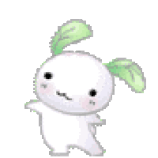
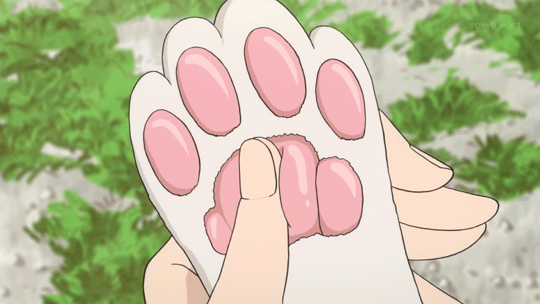
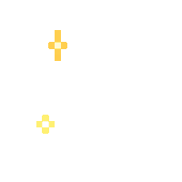

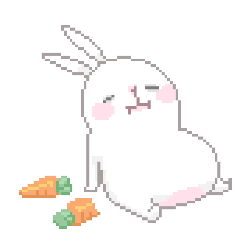


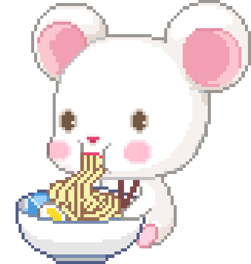

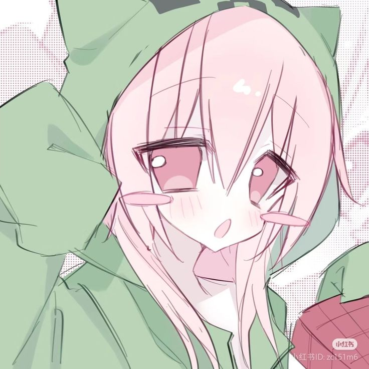

que ondi papus y mamus, les doy la bienvenida a papuland :v Papuland es un espacio de interacción nashi y sitio informativo dea (no toco pasto perdon xd) Ando recaudando para próximos diseños, es una buena forma de saber que la página está piola y que te gusta, eso me ayuda a seguir haciendo mas ideas 🗿
Ann11.nx ＜- mi alias owo
(tocá los links, no seas gagá)
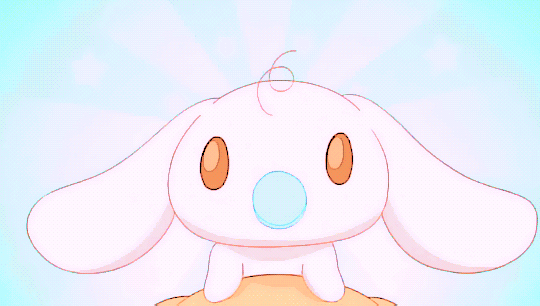
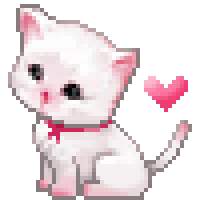
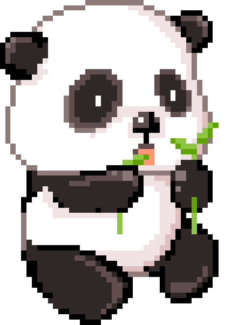
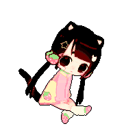
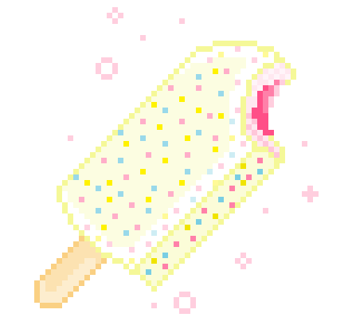
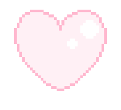
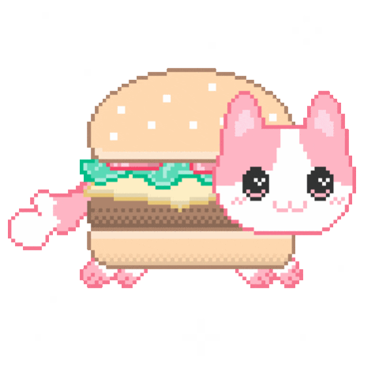
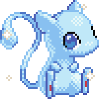
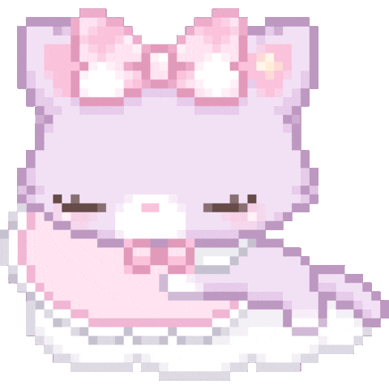
me gusta debatir temas complejos, más que “debatir” la palabra sería intercambiar ideas sin intención de imposición, me paso la mayor parte del tiempo jugando a la pc (x eso no toco pasto) me considero extrovertida pero tengo dias en donde no tengo ganas de hablar con nadie XD, soy de Argentina ⭐️⭐️⭐️ y menkanta el pan (lactal) CON FIAMBRE, alto sanguchito, si algún día me ves, invitame una monster y me cambia la cara de qlo :3

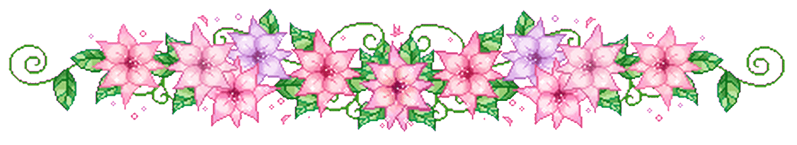
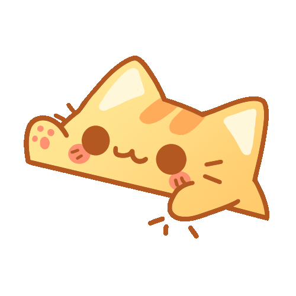
tambieeeeenn uno de mis proyectos más complejos es empezar con el cosplay, para este año ya tengo en mente 6 personajes distintos ^^ si te gustaría colaborar, el alias está arriba. Me gustaría escucharte/leerte, háblame para mas sugerencias o recomendaciones.
el primer COSPLAN es de Ada WONG Owo. a que mola mazo tio
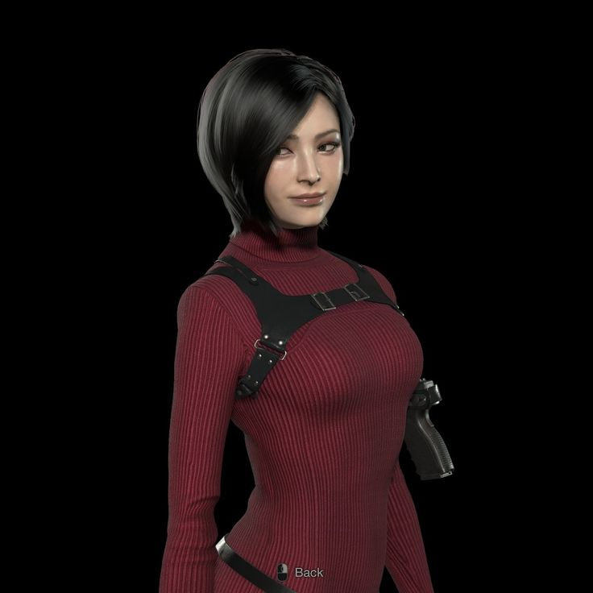
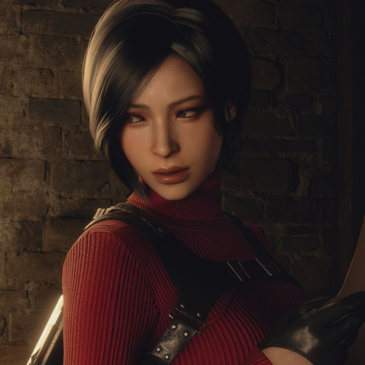
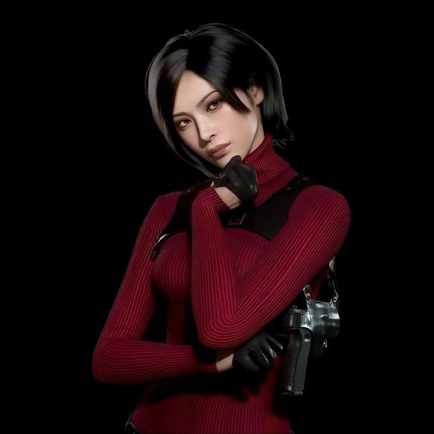
pronto se vendran más cosplays uwu owo por ahora dejo esto de relleno porque me da paja buscar otras imagenes OwO
⠀⠀⠀⠀⠀⠀⠀⠀⠀⠀⠀⠀⠀⠀⠀⠀⠀⠀⠀⣠⣤⣄⠀⠀⠀⠀⠀⠀⠀ ⠀⠀⠀⠀⠀⠀⠀⠀⠀⠀⠀⠀⠀⠀⠀⠀⠀⢀⣾⠋⠀⠹⣷⡀⠀⠀⠀⠀⠀ ⠀⠀⠀⠀⠀⠀⠀⠀⠀⠀⠀⠀⠀⠀⠀⠀⠀⢸⡇⠀⠀⠀⢹⡇⠀⠀⠀⠀⠀ ⠀⠀⠀⠀⠀⠀⠀⠀⠀⠀⠀⠀⠀⠀⠀⠀⠀⣿⡇⠀⠀⠀⠸⣿⠀⠀⠀⠀⠀ ⠀⠀⠀⠀⠀⠀⠀⠀⠀⠀⠀⠀⠀⠀⠀⠀⠀⢻⡇⠀⠀⠀⠀⣿⣠⣤⣤⣄⠀ ⠀⠀⠀⠀⠀⠀⠀⠀⠀⠀⠀⠀⠀⠀⠀⠀⣀⣸⣧⠀⠀⠀⠀⣿⡏⠀⠈⣿⡆ ⠀⠀⠀⠀⠀⠀⠀⠀⠀⠀⠀⠀⠀⠀⢰⡾⠉⠉⠟⠀⠀⠀⠀⠉⠁⠀⠀⢹⡇ ⠀⠀⠀⠀⠀⠀⠀⠀⢠⣶⣦⠀⠀⠀⢸⣧⠀⠀⠀⠀⠀⠀⠀⠀⠀⠀⠀⣿⠇ ⣠⣄⠀⠀⠀⠀⠀⢀⣾⠁⢹⣧⠀⠀⢈⡿⠀⠀⠀⠀⠀⠀⠀⠀⠀⠀⣸⠏⠀ ⣿⠛⢷⣤⣤⡴⠶⠾⠃⠀⠀⣿⢀⣴⠟⠁⠀⠀⠀⠀⠀⠀⠀⠀⣀⣼⠏⠀⠀ ⢻⡆⣀⡀⠀⠀⠀⠀⣀⣀⠀⣿⡟⠁⠀⠀⠀⠀⠀⢀⣠⣤⠶⠞⠋⠁⠀⠀⠀ ⠸⣿⡿⠟⣿⣄⡾⠟⡛⢓⣿⠋⠀⠀⠀⣀⣤⡶⠞⠛⠉⠀⠀⠀⠀⠀⠀⠀⠀ ⠀⠹⣷⣼⣁⣽⣧⣽⠿⠋⢁⣠⣴⠶⠛⠉⠀⠀⠀⠀⠀⠀⠀⠀⠀⠀⠀⠀⠀ ⠀⠀⣠⡿⠛⠉⠁⠀⠀⠰⣯⣁⣠⠴⠛⢻⡆⠀⠀⠀⠀⠀⠀⠀⠀⠀⠀⠀⠀ ⢀⣾⠋⢀⣄⠀⠀⠀⣀⠀⢿⡷⠦⠴⠶⠋⠀⠀⠀⠀⠀⠀⠀⠀⠀⠀⠀⠀⠀ ⢸⡏⢠⣿⢹⣧⠀⣾⠻⣧⠘⣿⠀⠀⠀⠀⠀⠀⠀⠀⠀⠀⠀⠀⠀⠀⠀⠀⠀ ⠘⢷⠟⠁⢸⡏⠀⣿⠀⠻⣦⣿⡇⠀⠀⠀⠀⠀⠀⠀⠀⠀⠀⠀⠀⠀⠀⠀⠀ ⠀⠀⠀⠀⢸⡇⢸⡟⠀⠀⠈⠁⠀⠀⠀⠀⠀⠀⠀⠀⠀⠀⠀⠀⠀⠀⠀⠀⠀ ⠀⠀⠀⠀⠈⠙⠋⠀⠀⠀⠀⠀⠀⠀⠀⠀⠀⠀⠀⠀⠀⠀⠀ ⠀⠀⠀⠀⠀⠀